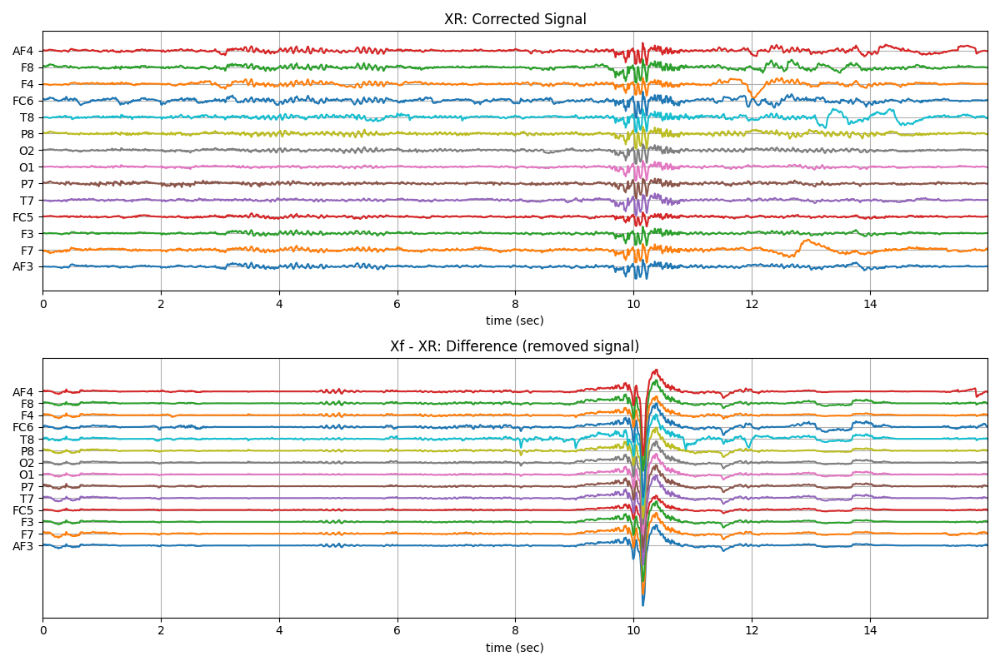

Note
Go to the end to download the full example code or to run this example in your browser via JupyterLite or Binder
EEG Artifact removal using ICA¶
ICA Filtering algorithm uses following three criteria for removing artifacts for EEG.
- Kurtosis based artifacts - mostly for motion artifacts:
parameter
kur_thris used as threshold on kurtosis of ICs. Any IC abovekur_thris removed. As higher kurtosis of component, more peaky it is.
- Correlation Based Index (CBI) for eye movement artifacts:
CBI method [1] computed the comparaision of power in prefrontal electrodes with frontal eletrodes, in IC. A component, that stisfy the criteria, is considered as component capturing eye-blink activity and removed.
For applying CBI method, index of prefrontal (AF - First Layer of electrodes towards frontal lobe) and frontal lobe (F - second layer of electrodes) channels needs to be provided.
- For case of 14-channels Emotiv Epoc
ch_names = [‘AF3’,’F7’,’F3’,’FC5’,’T7’,’P7’,’O1’,’O2’,’P8’,’T8’,’FC6’,’F4’,’F8’,’AF4’]
Pre-frontal Channels =[‘AF3’,’AF4’],
Fronatal Channels = [‘F7’,’F3’,’F4’,’F8’]
- then suplied index of channels are as follow;
AF_ch_index=[0,13]
F_ch_index=[1,2,11,12]
- Correlation of any IC with many EEG channels:
If any IC is correlated
corr_thr% (80%) of elecctrodes, is considered to be artifactualSimilar like CBI, except, not comparing fronatal and prefrontal but to all
# Importing libraries/spkit
import numpy as np
import matplotlib.pyplot as plt
import warnings
warnings.filterwarnings("ignore")
import spkit as sp
print('spkit version :', sp.__version__)
spkit version : 0.0.9.7
Load and filter EEG Signal¶
# Load sample EEG Data ( 16 sec, 128 smapling rate, 14 channel)
# Filter signal (with IIR highpass 0.5Hz)
X, fs, ch_names = sp.data.eeg_sample_14ch()
Xf = sp.filter_X(X.copy(),fs=128.0, band=[0.5], btype='highpass',ftype='SOS')
print(Xf.shape)
(2048, 14)
Artifact removal using ICA¶
XR = sp.eeg.ICA_filtering(Xf.copy(),verbose=1,kur_thr=2,corr_thr=0.8,winsize=128)
t = np.arange(Xf.shape[0])/fs
plt.figure(figsize=(12,8))
plt.subplot(211)
plt.plot(t,XR+np.arange(-7,7)*200)
plt.xlim([t[0],t[-1]])
plt.xlabel('time (sec)')
plt.yticks(np.arange(-7,7)*200,ch_names)
plt.grid()
plt.title('XR: Corrected Signal')
plt.subplot(212)
plt.plot(t,(Xf-XR)+np.arange(-7,7)*200)
plt.xlim([t[0],t[-1]])
plt.xlabel('time (sec)')
plt.yticks(np.arange(-7,7)*200,ch_names)
plt.grid()
plt.title('Xf - XR: Difference (removed signal)')
plt.tight_layout()
plt.show()
plt.figure(figsize=(12,5))
plt.plot(t,Xf+np.arange(-7,7)*200)
plt.xlim([t[0],t[-1]])
plt.xlabel('time (sec)')
plt.yticks(np.arange(-7,7)*200,ch_names)
plt.grid()
plt.title('Xf: 14 channel - EEG Signal (filtered)')
plt.tight_layout()
plt.show()
- 
ICA Artifact Removal : extended-infomax
3%|▓ |2112\65|
6%|▓▓▓ |2112\129|
9%|▓▓▓▓ |2112\193|
12%|▓▓▓▓▓▓ |2112\257|
15%|▓▓▓▓▓▓▓ |2112\321|
18%|▓▓▓▓▓▓▓▓▓ |2112\385|
21%|▓▓▓▓▓▓▓▓▓▓ |2112\449|
24%|▓▓▓▓▓▓▓▓▓▓▓▓ |2112\513|
27%|▓▓▓▓▓▓▓▓▓▓▓▓▓ |2112\577|
30%|▓▓▓▓▓▓▓▓▓▓▓▓▓▓▓ |2112\641|
33%|▓▓▓▓▓▓▓▓▓▓▓▓▓▓▓▓ |2112\705|
36%|▓▓▓▓▓▓▓▓▓▓▓▓▓▓▓▓▓▓ |2112\769|
39%|▓▓▓▓▓▓▓▓▓▓▓▓▓▓▓▓▓▓▓ |2112\833|
42%|▓▓▓▓▓▓▓▓▓▓▓▓▓▓▓▓▓▓▓▓▓ |2112\897|
45%|▓▓▓▓▓▓▓▓▓▓▓▓▓▓▓▓▓▓▓▓▓▓ |2112\961|
48%|▓▓▓▓▓▓▓▓▓▓▓▓▓▓▓▓▓▓▓▓▓▓▓▓ |2112\1025|
51%|▓▓▓▓▓▓▓▓▓▓▓▓▓▓▓▓▓▓▓▓▓▓▓▓▓ |2112\1089|
54%|▓▓▓▓▓▓▓▓▓▓▓▓▓▓▓▓▓▓▓▓▓▓▓▓▓▓▓ |2112\1153|
57%|▓▓▓▓▓▓▓▓▓▓▓▓▓▓▓▓▓▓▓▓▓▓▓▓▓▓▓▓ |2112\1217|
60%|▓▓▓▓▓▓▓▓▓▓▓▓▓▓▓▓▓▓▓▓▓▓▓▓▓▓▓▓▓▓ |2112\1281|
63%|▓▓▓▓▓▓▓▓▓▓▓▓▓▓▓▓▓▓▓▓▓▓▓▓▓▓▓▓▓▓▓ |2112\1345|
66%|▓▓▓▓▓▓▓▓▓▓▓▓▓▓▓▓▓▓▓▓▓▓▓▓▓▓▓▓▓▓▓▓▓ |2112\1409|
69%|▓▓▓▓▓▓▓▓▓▓▓▓▓▓▓▓▓▓▓▓▓▓▓▓▓▓▓▓▓▓▓▓▓▓ |2112\1473|
72%|▓▓▓▓▓▓▓▓▓▓▓▓▓▓▓▓▓▓▓▓▓▓▓▓▓▓▓▓▓▓▓▓▓▓▓▓ |2112\1537|
75%|▓▓▓▓▓▓▓▓▓▓▓▓▓▓▓▓▓▓▓▓▓▓▓▓▓▓▓▓▓▓▓▓▓▓▓▓▓ |2112\1601|
78%|▓▓▓▓▓▓▓▓▓▓▓▓▓▓▓▓▓▓▓▓▓▓▓▓▓▓▓▓▓▓▓▓▓▓▓▓▓▓▓ |2112\1665|
81%|▓▓▓▓▓▓▓▓▓▓▓▓▓▓▓▓▓▓▓▓▓▓▓▓▓▓▓▓▓▓▓▓▓▓▓▓▓▓▓▓ |2112\1729|
84%|▓▓▓▓▓▓▓▓▓▓▓▓▓▓▓▓▓▓▓▓▓▓▓▓▓▓▓▓▓▓▓▓▓▓▓▓▓▓▓▓▓▓ |2112\1793|
87%|▓▓▓▓▓▓▓▓▓▓▓▓▓▓▓▓▓▓▓▓▓▓▓▓▓▓▓▓▓▓▓▓▓▓▓▓▓▓▓▓▓▓▓ |2112\1857|
90%|▓▓▓▓▓▓▓▓▓▓▓▓▓▓▓▓▓▓▓▓▓▓▓▓▓▓▓▓▓▓▓▓▓▓▓▓▓▓▓▓▓▓▓▓▓ |2112\1921|
93%|▓▓▓▓▓▓▓▓▓▓▓▓▓▓▓▓▓▓▓▓▓▓▓▓▓▓▓▓▓▓▓▓▓▓▓▓▓▓▓▓▓▓▓▓▓▓ |2112\1985|
97%|▓▓▓▓▓▓▓▓▓▓▓▓▓▓▓▓▓▓▓▓▓▓▓▓▓▓▓▓▓▓▓▓▓▓▓▓▓▓▓▓▓▓▓▓▓▓▓▓ |2112\2049|
100%|▓▓▓▓▓▓▓▓▓▓▓▓▓▓▓▓▓▓▓▓▓▓▓▓▓▓▓▓▓▓▓▓▓▓▓▓▓▓▓▓▓▓▓▓▓▓▓▓▓▓|2112\2113|
Done!
On smaller segment¶
Xf1 = Xf[128*10:128*14].copy()
t = np.arange(Xf1.shape[0])/fs
plt.figure(figsize=(12,5))
plt.plot(t,Xf1+np.arange(-7,7)*200)
plt.xlim([t[0],t[-1]])
plt.xlabel('time (sec)')
plt.yticks(np.arange(-7,7)*200,ch_names)
plt.grid()
plt.title('Xf: 14 channel - EEG Signal (filtered)')
plt.tight_layout()
plt.show()
XR1 = sp.eeg.ICA_filtering(Xf1.copy(),verbose=1,kur_thr=2,corr_thr=0.8,winsize=128*2)
print(XR1.shape)
plt.figure(figsize=(15,5))
plt.subplot(121)
plt.plot(t,XR1+np.arange(-7,7)*200)
plt.xlim([t[0],t[-1]])
plt.xlabel('time (sec)')
plt.yticks(np.arange(-7,7)*200,ch_names)
plt.grid()
plt.title('XR: Corrected Signal')
plt.subplot(122)
plt.plot(t,(Xf1-XR1)+np.arange(-7,7)*200)
plt.xlim([t[0],t[-1]])
plt.xlabel('time (sec)')
plt.yticks(np.arange(-7,7)*200,ch_names)
plt.grid()
plt.title('Xf - XR: Difference (removed signal)')
plt.tight_layout()
plt.show()

ICA Artifact Removal : extended-infomax
20%|▓▓▓▓▓▓▓▓▓▓ |640\129|
40%|▓▓▓▓▓▓▓▓▓▓▓▓▓▓▓▓▓▓▓▓ |640\257|
60%|▓▓▓▓▓▓▓▓▓▓▓▓▓▓▓▓▓▓▓▓▓▓▓▓▓▓▓▓▓▓ |640\385|
80%|▓▓▓▓▓▓▓▓▓▓▓▓▓▓▓▓▓▓▓▓▓▓▓▓▓▓▓▓▓▓▓▓▓▓▓▓▓▓▓▓ |640\513|
100%|▓▓▓▓▓▓▓▓▓▓▓▓▓▓▓▓▓▓▓▓▓▓▓▓▓▓▓▓▓▓▓▓▓▓▓▓▓▓▓▓▓▓▓▓▓▓▓▓▓▓|640\641|
Done!
(512, 14)
Total running time of the script: (0 minutes 4.311 seconds)
Related examples


EEG Computing Rhythmic Features - PhyAAt - Semanticity